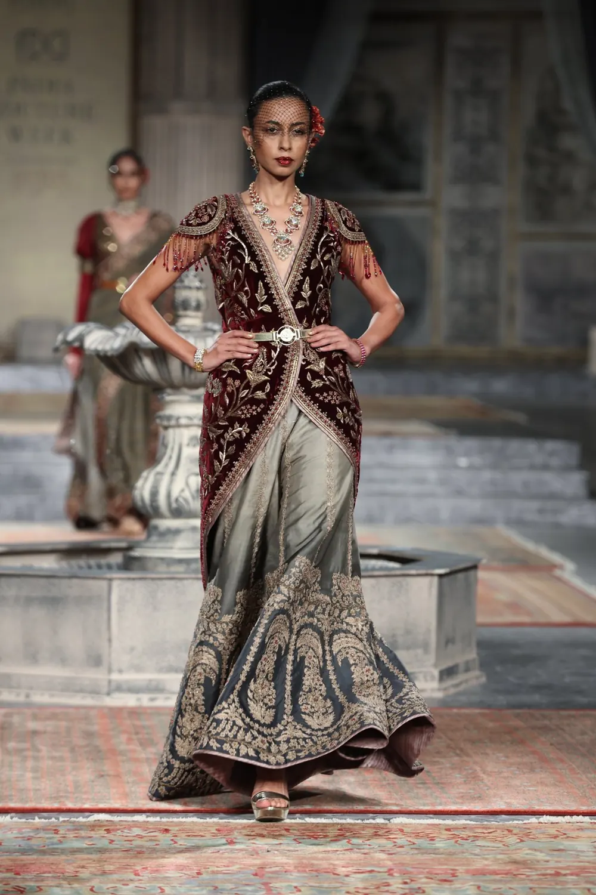
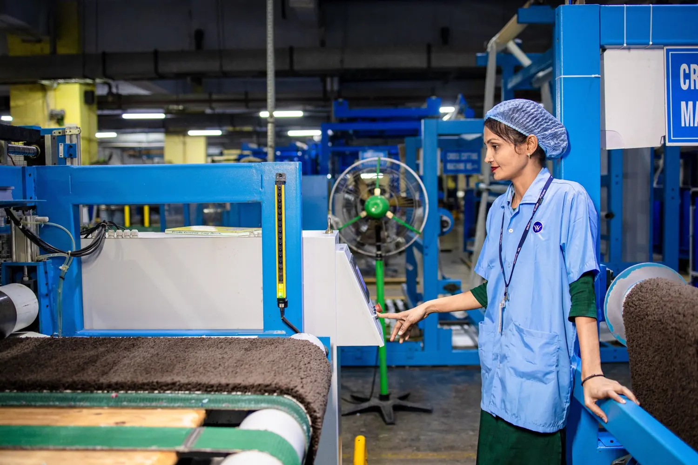
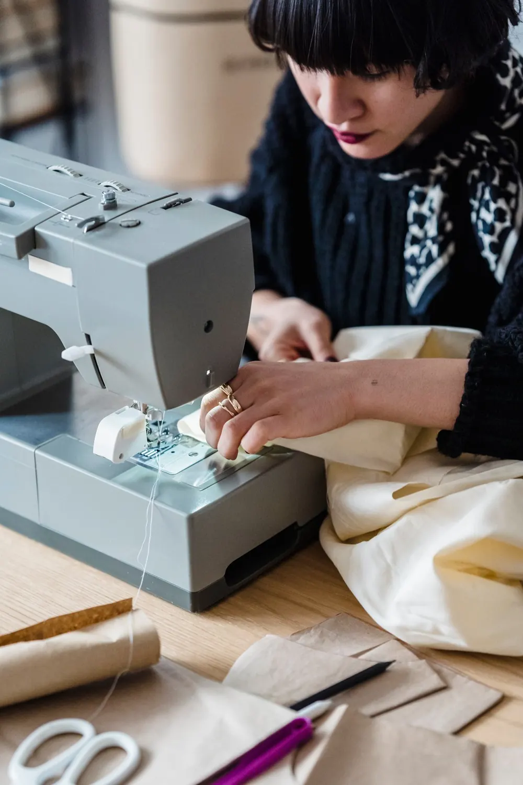

Thread to trend, woven with care.
Vastrayan Textiles makes fabrics, ethnic wear and everyday garments – from yarn and loom to the final stitch – for retailers, boutiques and private labels.
Made for every wardrobe & shelf

Four hands-on stages, one roof

Spin & Weave
Yarn is set on looms and woven into fabric.

Dye & Test
Colours matched and checked in our lab.

Cut & Stitch
Skilled teams turn fabric into garments.
Pack & Ship
Checked, packed and ready to dispatch.
Crafted by people, checked by process
A textile partner that understands both the loom and the shop floor – so what you order is what reaches your customers.
Loom-to-garment control
Weaving, dyeing and stitching planned together for consistent output.
In-house colour lab
Shade matching and colour checks before bulk production begins.
Custom & private label
Your designs, prints, labels and packing – made to your brief.
Quality at every stage
Fabric inspection and finishing checks before anything is packed.
Where cloth comes alive



Need a sample or a bulk quote?
Tell us the fabric, quantity and timeline – your message goes straight to our WhatsApp.